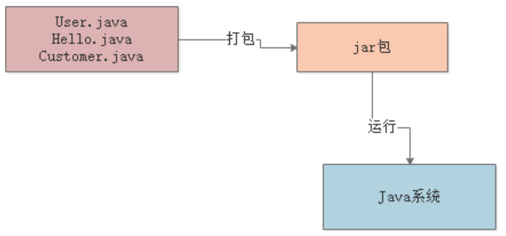
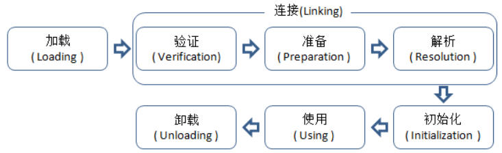
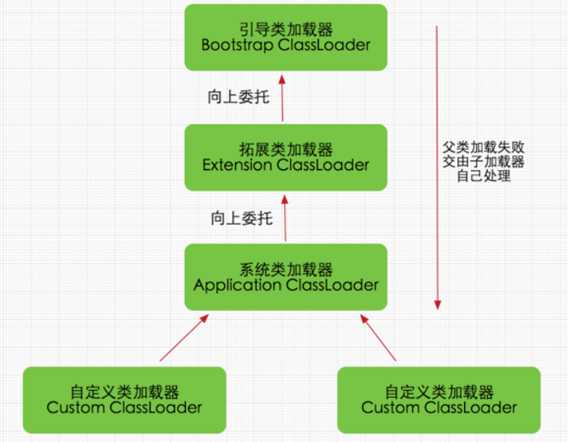
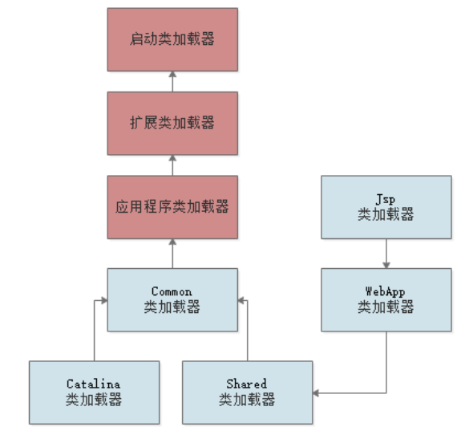
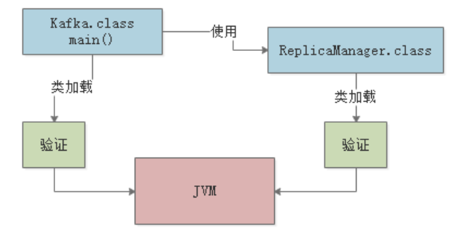
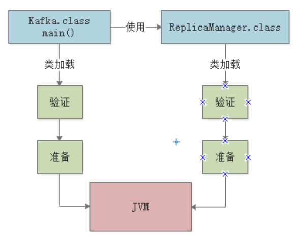
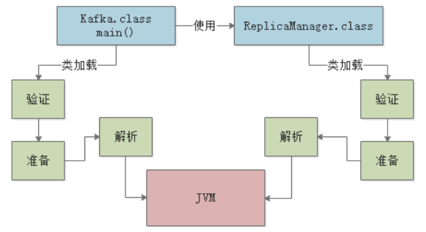
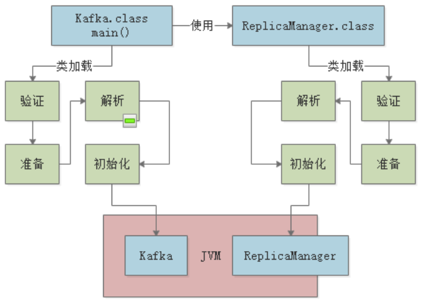

首先，我们来简单看下Java程序的执行流程：

上图中，典型的Java程序执行流程如下：
Java的类加载机制远没有第一节中描述的那么简单，上述只是让读者了解下整体流程，本节，我们就深入内部，讲解下Java的类加载机制的内部原理。
类从.class二进制数据被加载到 JVM 内存中开始，到卸载出内存为止，它的整个生命周期包括：
加载（Loading）、验证（Verification）、准备(Preparation)、解析(Resolution)、初始化(Initialization)、使用(Using)、卸载(Unloading)，共7个阶段。

加载（Loading）阶段很简单，当程序执行到需要的类时，JVM就会通过类加载器 将其加载到内存中。接下来，我们先看下什么是类加载器，然后详细讲解整个类加载流程。
类加载器可以大致划分为以下三类：
主要负责加载 JDK 安装目录下的核心类库（比如/lib目录下的类），这些核心类库是JVM运行时自身需要用到的。
Bootstrap ClassLoader 采用C++语言实现，也是JVM自身的一部分，开发者不能直接在Java程序中使用。
主要负责加载 JDK 安装目录下的扩展类库（比如/lib/ext目录下的类），这些扩展类库是JDK按照功能进行模块划分的，一般也是Java程序运行所必需的。
开发者可以在Java程序中直接使用Extension ClassLoader。
负责加载用户类路径（classpath）所指定的类，可以简单的理解成负责加载用户自己开发的Java类。
开发者可以在Java程序中直接使用Extension ClassLoader，这也是默认的类加载器。
除了上述提供到三种类加载器外，开发者也可以自定义类加载器，根据自己的需求去加载类。
JVM的类加载器是有亲子层级结构的，层级结构如下图：

当我们的类加载器需要加载一个类时，首先会委派给自己的父类加载器去加载，最终传到到顶层 的类加载器去加载；如果某个父类加载器发现在自己负责的范围内并没有找到这个类，就会下推加载权力给自己的子类加载器。
以上图为例：
双亲委派机制的优点很明显，可以避免类的重复加载，当父亲已经加载了该类时，子ClassLoader就没有必要再加载一次。
另外，考虑到安全因素，Java核心api中的类不会被随意替换：假设通过网络传递一个名为java.lang.Integer的类，通过双亲委托模式传递到Bootstrap ClassLoader，发现在核心Java API中已经有这个类了，就并不会重新加载网络传递过来的java.lang.Integer，而直接返回已加载过的Integer.class，这样便可以防止核心API库被随意篡改。
下面我们通过一个示例，更好地理解下双亲委派机制。Tomcat是常用的web容器，本身是用Java实现的，当我们的程序以war包部署到tomcat后，tomcat启动后的内部JVM需要加载我们程序中的.class文件。那么Tomcat的类加载机制应该如何设计，才能动态加载我们war包中的类到tomcat自身的JVM中去呢？
首先，Tomcat的类加载体系如下图，蓝色部分是Tomcat继承Application ClassLoader实现的自定义类加载器：

Common、Catalina、Shared类加载器用来加载Tomcat自身的一些核心基础类库。同时，Tomcat为每一个部署在其内的web应用都分配了一个对应的WebApp类加载器，就是这个类加载器负责加载我们部署的这个web应用的类，每一个WebApp只负责加载自己对应的那个web应用的class文件，不会传导给上层类加载器去加载。所以，Tomcat的类加载器设计其实是打破了双亲委派机制的。
至于Jsp类加载器，则是给每一个JSP都准备了一个Jsp类加载器。
根据Java虚拟机规范，需要对加载进来的“.class”文件的内容进行校验，包括验证文件格式、元数据、字节码、符号引用等各种信息，以确认是否符合指定的规范。
验证阶段就是用来做这个事情的，来看下下面的代码：
public class Kafka {
public static void main(String[] args) {
ReplicaManager manager = new ReplicaManager();
}
}
代码示例中，Kafka类用到了ReplicaManager类，所以它们都会在被加载进JVM后进行验证：

准备阶段，主要是为类及其静态字段分配内存，并将其初始化为默认值。比如，下面的ReplicaManager类：
public class ReplicaManager {
public static int flushInterval;
}
当加载阶段、验证阶段都执行完成后，JVM会给类的静态字段分配内存空间，上述代码就是给flushInternal字段赋默认值0，整个过程如下图：

解析阶段，实际上是把类的符号引用替换为直接引用的过程，这一过程底层非常复杂，我们后续章节将进行专门讲解。

之前说过，JVM会在准备阶段给类的静态字段分配空间和默认值。而在初始化阶段，就会正式执行类的初始化代码，对类进行初始化操作。什么是初始化代码？我们来看下下面这段代码理解下：
public class ReplicaManager {
public static int flushInterval = Configuration.getInt("replica.flush.interval");
public static Map<String,Replica> replicas;
static {
loadReplicaFromDish():
}
public static void loadReplicaFromDish(){
this.replicas = new HashMap<String,Replica>();
}
}
对于flushInternal变量，我们通过一个getInt方法从配置中获取值并进行赋值，这个赋值动作在准备阶段是不会执行的，而是在初始化阶段执行。另外，对于static静态代码块，也是在这个阶段执行的。

在初始化阶段，如果JVM初始化某个类时，发现其父类还没有初始化完成的话，会首先去加载其父类，加载策略就是上一节提到的双亲委派机制。
没啥好说的，就是在程序中使用类或对象。
卸载阶段，就是当对象不再需要使用时，JVM需要进行垃圾回收，这一阶段涉及两个核心过程：存活判定和垃圾回收，我们会在后续章节详细讲解。
本章，我们介绍了Java的类加载机制及其整个流程，JVM底层的类加载过程的细节非常多，十分复杂，读者如果想要深入，可以参阅The Java® Virtual Machine Specification。下一章，我们将看看JVM是如何进行内存区域划分的。